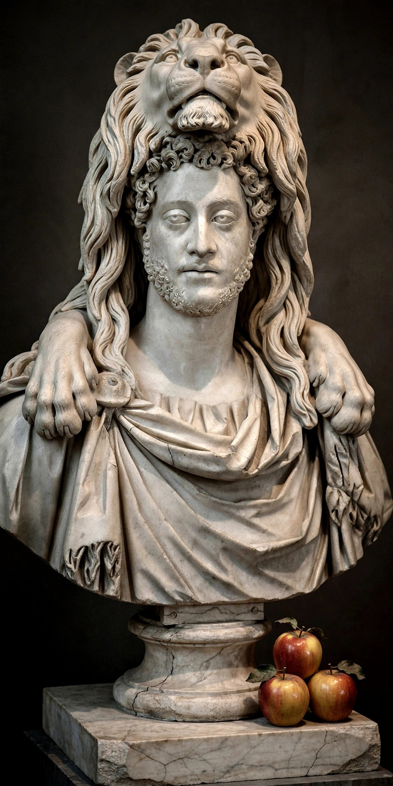

| Commodus | |
|---|---|
| Reign | 177 – 31 December 192 AD (sole ruler from 180) |
| Born | 31 August 161, Lanuvium |
| Died | 31 December 192 (aged 31), Rome |
| Predecessor | Marcus Aurelius |
| Successor | Pertinax |
| Father | Marcus Aurelius |
| Mother | Faustina the Younger |
Commodus (31 August 161 – 31 December 192) was Roman emperor from 177 to 192, first as co-emperor with his father Marcus Aurelius and then ruling alone from 180. His reign is commonly considered to mark the end of the Pax Romana and the beginning of Rome's age of instability. The son of the philosopher-emperor Marcus Aurelius, author of the Meditations, Commodus was the first emperor since Titus to succeed his own father, and the first to be "born in the purple" — born during his father's reign.
Made co-emperor in 177, Commodus succeeded on Marcus's death in March 180. He quickly concluded the Marcomannic Wars on the Danube and returned to Rome, where an assassination attempt in 182, organised by his sister Lucilla, began a series of purges. Increasingly distrustful of the Senate, Commodus delegated power to favourites — the praetorian prefects Perennis and Cleander — whose falls in turn were marked by violence.
Commodus cultivated an identification with the god-hero Hercules, appearing in public wearing a lion skin and carrying a club. He fought in the arena as a gladiator, an activity considered scandalous for an emperor, and staged hunts in which he killed wild animals before the crowd. Ancient historians such as Cassius Dio and Herodian depict a reign of megalomania: he renamed Rome itself Colonia Lucia Annia Commodiana and renamed the months of the year after his own many names and titles.
On 31 December 192, after an attempt to poison him failed, Commodus was strangled in his bath by the wrestler Narcissus, in a conspiracy involving his mistress Marcia and the praetorian prefect Laetus. The Senate declared him a public enemy and subjected his memory to damnatio memoriae, though he was later deified by Septimius Severus. His death ended the Nerva–Antonine dynasty and plunged Rome into the Year of the Five Emperors (193).